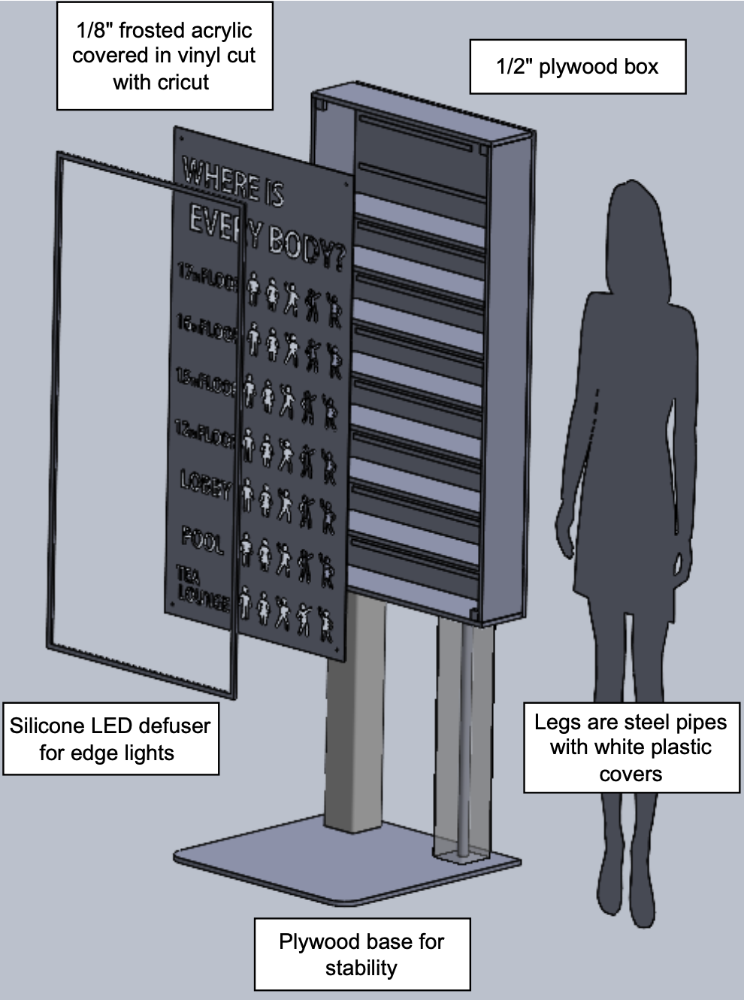
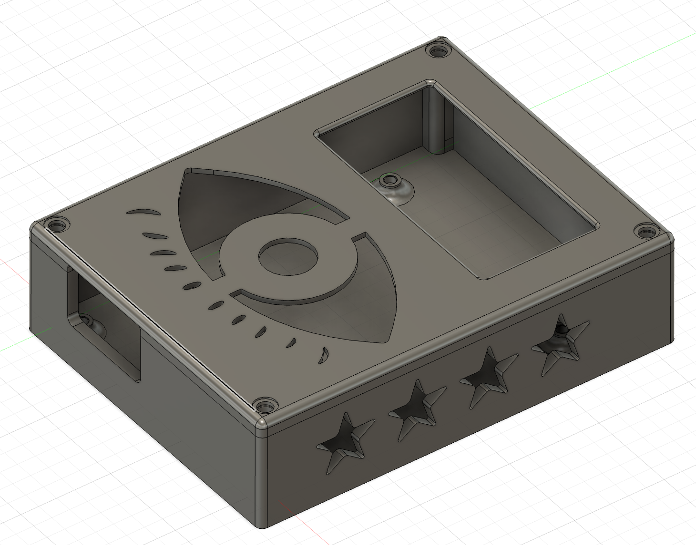
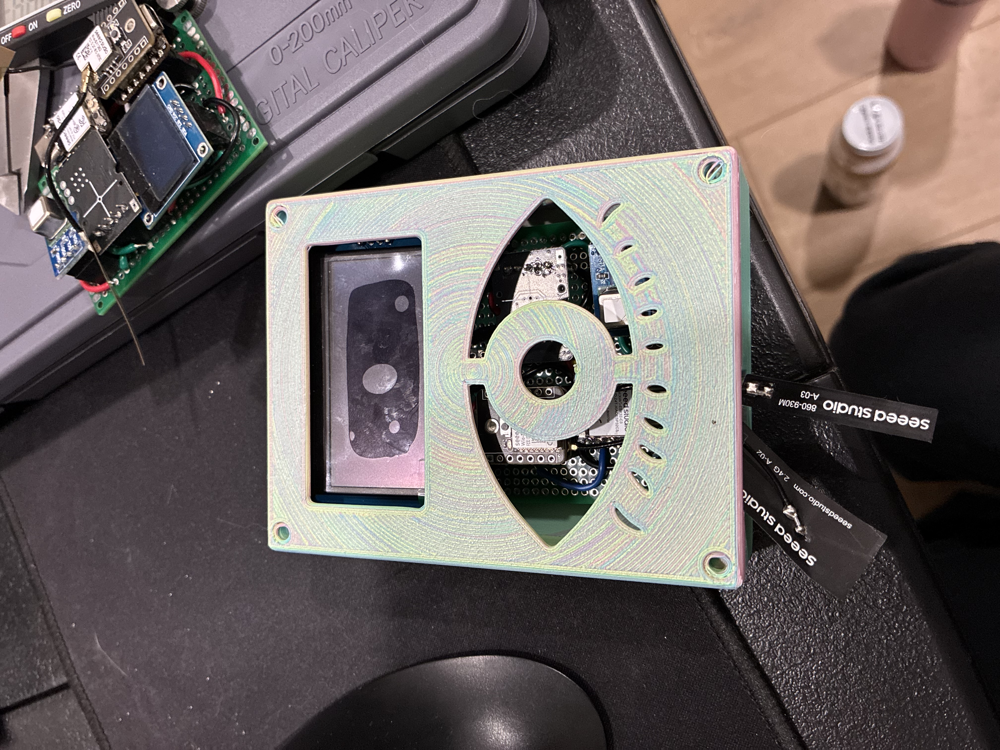
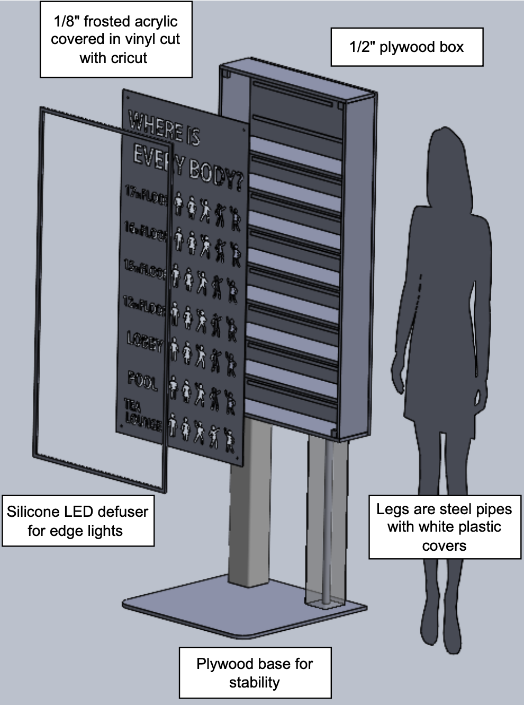
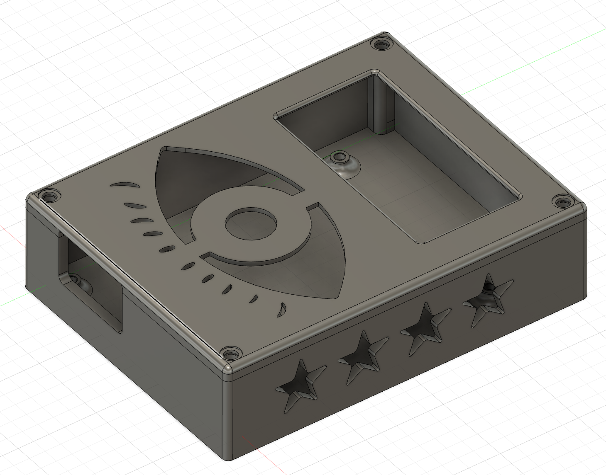
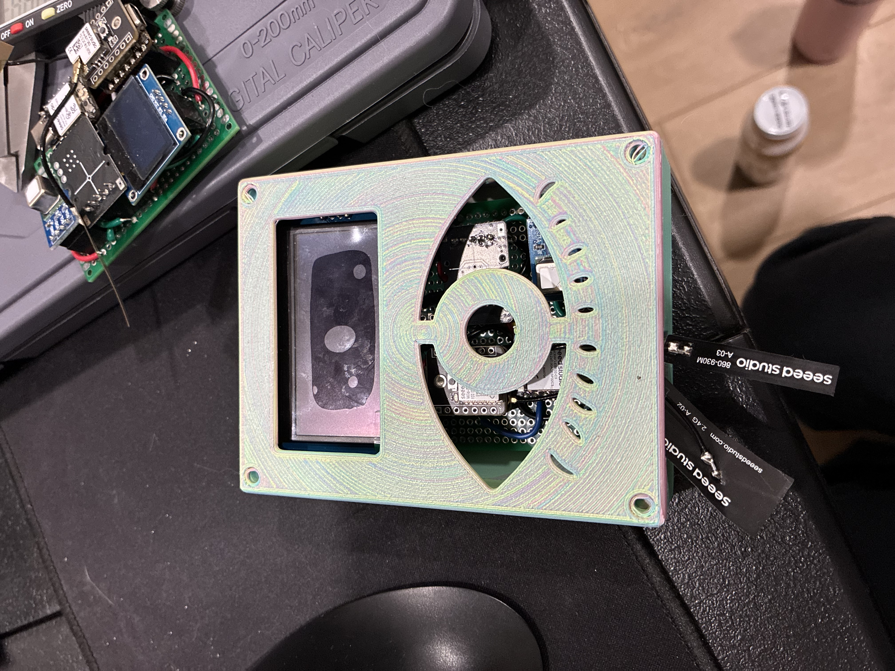
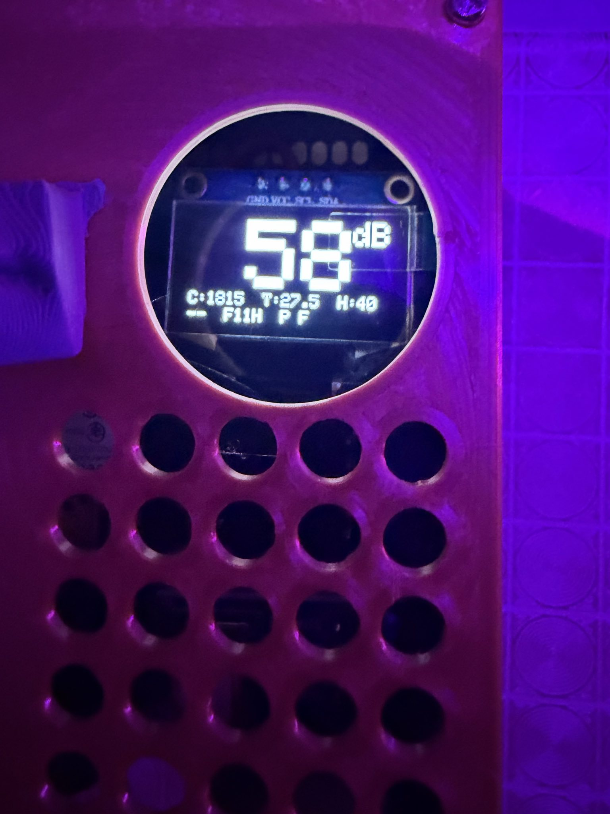
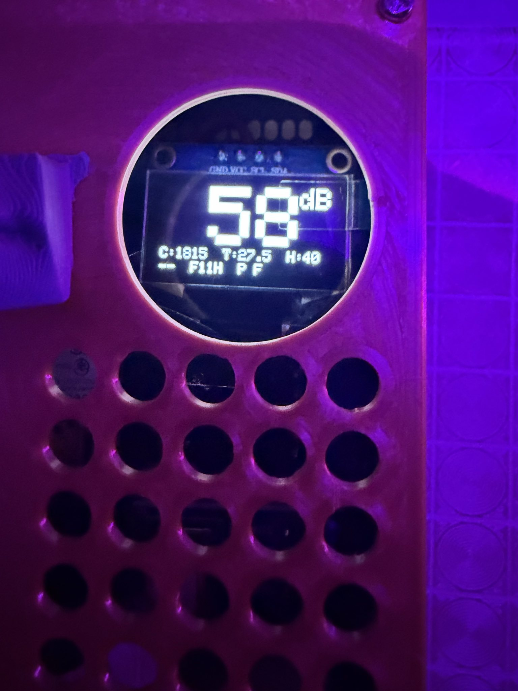

WIEBA - Where Is Every Body At?!
Project lead and hardware engineer
Fall 2025
 





 

WHAT IS IT
Where Is Every Body At?! (WIEBA) is a technical art installation that visualizes real-time crowd density across multiple floors of a hotel during a large immersive art conference.
For this conference, specific floors of the hotel are dedicated to immersive installations. Moving between floors via elevator is often unpredictable - one floor may be densely packed, while another is near empty. WIEBA is a functional art piece that uses environmental sensors to approximate how many people are on each floor. That information is then relayed via a local network to a physical LED display located by the main floor elevators. The LED display is updated in realtime to provide attendees with an approximation of floor density.
I served as the project lead and hardware engineer, leading a five-person team to design, build, deploy, and calibrate a distributed sensing and visualization system under real-world constraints.
HOW IT WORKED
WIEBA was implemented as a distributed sensor network feeding a centralized physical display.
SENSORS


OLED display showing real-time sensor readings
Microphone module for ambient sound level detection
SCD40 CO2 sensor and BME280 for temperature/humidity
Seeed Studio XIAO ESP32-C3 microcontroller with Wio-SX1262 LoRa module
Solder connections on the back of the perfboard
Two probe form factors (large and small) were deployed per floor - one in the rotunda and one in the hallway - to sample different spatial conditions. A total of 13 probes were built; I hand-soldered and assembled 7 of them. I designed the enclosures for the probes in Fusion 360.
Sensor data was transmitted over a local network to a central system, which aggregated readings and mapped them to a bar graph style LED display representing relative occupancy per floor.
OCCUPANCY ESTIMATION & CALIBRATION
Through earlier experiments at a separate event, the team identified CO2 concentration as the strongest proxy for human presence compared to temperature, humidity or sound alone.
Initial CO2 data was used to estimate rough occupancy thresholds. Once on site, we conducted a live calibration period by:
- observing actual crowd sizes in specific spaces
- comparing observed occupancy with real-time CO2 readings
- adjusting threshold values to align sensor output with perceived density
This process allowed us to tune the visualization to the specific airflow, volume, and usage patterns of the hotel environment.
NETWORKING & DEPLOYMENT CONSTRAINTS
The original system design relied on a Meshtastic mesh network to transmit data between floors. During on-site testing, we quickly discovered that signal propagation through the hotel structure was insufficient for reliable communication.
To ensure robustness and meet deployment timelines, we pivoted to using the hotel's WiFi network. While less exciting than intended, this decision prioritized successful deployment.
PHYSICAL DISPLAY & FABRICATION
The main display was constructed as a custom, bookcase-style plywood enclosure with an acrylic cover. I designed the display graphic in Inkscape. Addressable LEDs were attached to each row. Cardboard baffles were used to segment and prevent light bleed. The display translated aggregated sensor data into an intuitive, glanceable representation of floor-by-floor occupancy.
MY ROLE
As the project lead, I:
- set technical direction and consulted on system architecture
- coordinated task ownership across the team
- made final decisions on hardware, networking, and deployment strategy
- led on-site installation and calibration
As a hardware engineer, I:
- designed and fabricated the sensor probes
- designed and assembled the probe enclosures
- designed the display graphic
OUTCOME
It worked! We managed to promise and deliver a real-time occupancy visualization. Some confounding variables to note are things like the ventilation system. Our least accurate reading was in the pool area. As the WiFi signal did not extend to the indoor pool area, the sensor probe was placed in the hallway leading to the pool instead. This area was well ventilated, and people did not congregate in the hallway for very long, leading to our most inaccurate reading.